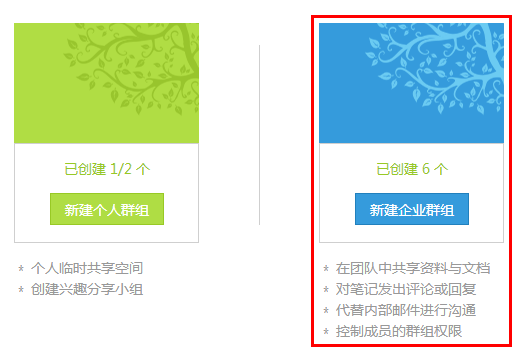
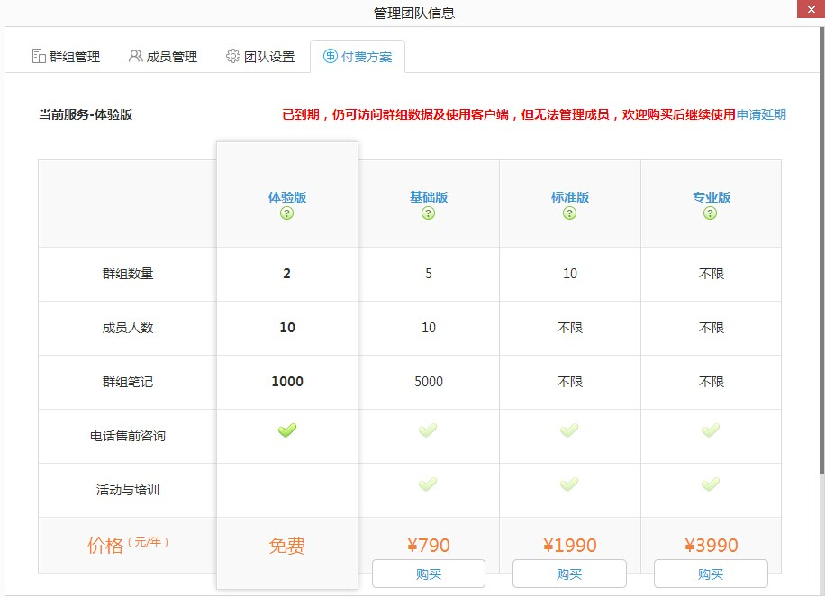

为知笔记企业服务，为中小团队提供了互联网时代的资料共享解决方案，团队可利用为知笔记企业群组，搭建内部资料库，共享工作记录，在团队内部进行协作沟通。
为知笔记的群组服务，是存储空间的一种形态，在群组中，可以共享笔记、附件、文档。用户按照不同的权限查看或管理群组内容，还能够对笔记进行评论和回复
1.登录为知笔记Windows客户端，点击左侧的“团队&群组 +”
2.在弹出的页面中，选择“开通企业服务“

3.进入开通向导
第一步，完善团队基本信息
第二步，根据需求，选择所要创建的企业群组
默认可选择2个，选择后可在客户端中进行修改 如需增加企业群组，可在创建成功后升级服务；
第三步，输入成员邮箱，添加到团队，这里会将成员默认分配到所有群组
开通成功后，会发送一封确认邮件，成员点击正文中的链接操作即可
4.完成向导后，自动进入团队管理后台，如无需继续添加成员，可将窗口关闭
5.点击Windows客户端的同步按钮，查看新创建的群组和目录
为知笔记企业服务为不同类型、规模的团队，结合提供了多种产品套餐方案。
点此了解：http://blog.wiz.cn/wiznote-biz-pricing.html
开通试用后，登录为知笔记Windows客户端，点击左侧的“团队&群组 +”。
在弹出窗口中，查看”付费方案“标签，选择需要购买的版本下面的购买。
在支付中心，选择所要购买的服务类型与时长，选择支付类型进行购买
注：为知笔记企业服务提供私有部署方案，您可以选择将服务端部署在公司内部的服务器，自主维护和管理，详询 400-825-8085